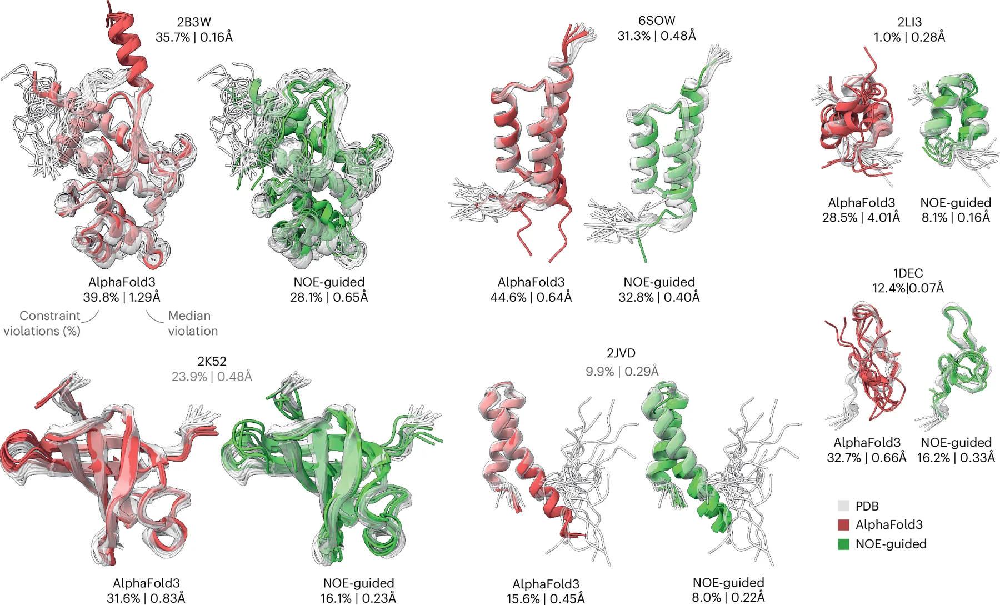
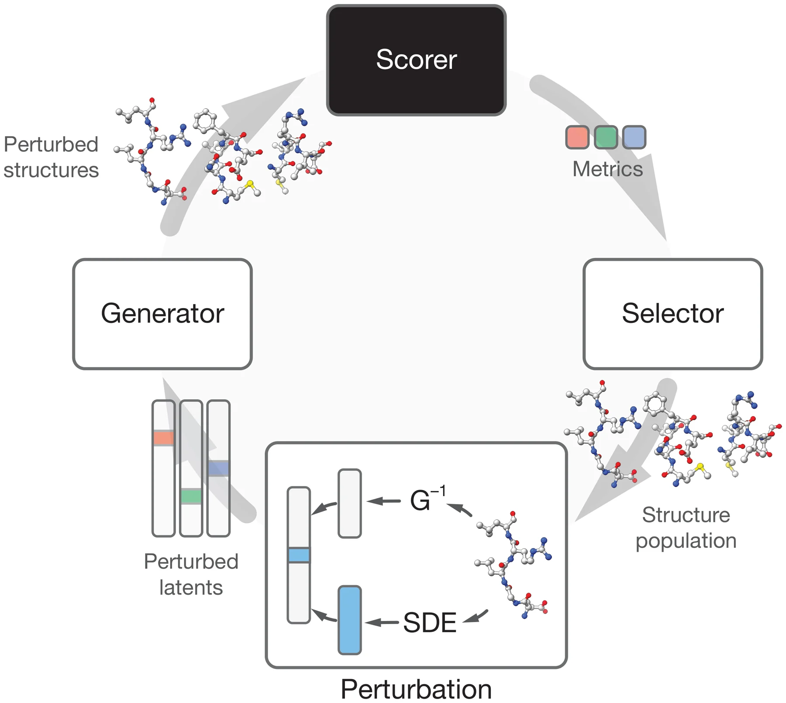
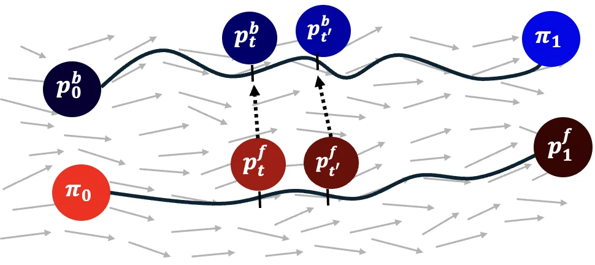

Publications
* Equal contribution.
Symmetry-aware residual learning of few-body molecular wave functions
Read the post
Experiment-guided AlphaFold3 resolves measurement-consistent protein ensembles
Follow-up to Inverse problems with experiment-guided AlphaFold
Read the post
Representing local protein environments with machine learning force fields
Read the post
Seek and You Shall Fold
Follow-up to Inverse problems with experiment-guided AlphaFold
Read the post
Inverse problems with experiment-guided AlphaFold
Read the post